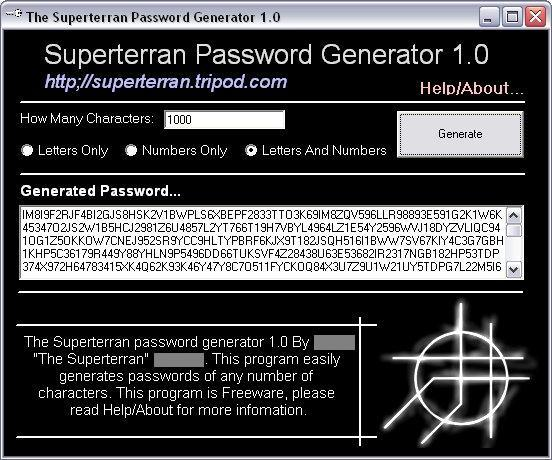

The Superterran Password Generator Read Me
File
|
|
|---|---|
|
The Superterran Password Generator 1.0 Build
102

By: The Superterran'
|
|
What does it
do?
|
|
|
This program is designed to generate random numbers
and/or letters to make a randomly generated password. This process is
relitivly easy, type in the number of characters you want it to be, select
if you want it to be letters, numbers or both, and then click generate. i
have succsessfully made a password with 10 thousand characters, but you
should be able to make a password with more than 1 Million characters. Why
would you ever want to use this program? Randomly generated passwords are
the hardest to break, expecally if there really big. This program can
easily make a 5 - 12 character password, and also easily make a 512
character password, and for you parinoid people out there, make passwords
that are 10 thousand, 100 thousand, even a million characters long. That
type of thing is really secure. since this is a Superterran title, it is
FREE! hahaha! i have plauged the UI with infomation about me and my site,
which can be your payment. If you like this simple program, i urge you to
visit my website, where you can find a lot of really cool stuff. The
URL is http://superterran.tripod.com. If
you want to contact me, you can e-mail me at thesuperterran@hotmail.com.
|
|
Credit's and useless
infomation
|
|
|
This piece of software was quickly thrown together by
Doug 'The Superterran' Hatcher. I got the insparation for this nifty little
thing from the Tech TV show, The Screen Savers! I was hearin'
my boy Leo talk about passwords, and he was saying the best passwords
where randomly generated numbers. And i thought to myself "Well superterran,
that should be an easy program to write." and i went to work on the handy-Dancy
Microsoft Visual Basic program. The Program is accually really easy. want
to se the code?
Public Declorations
Public asciinum As Long
Public coinflip As Integer Public amount As Long Private Sub Command1_Click()
If password.Text <> "" Then
prompt = MsgBox("If you continue, you will clear out your last generated password! Continue?", vbOKCancel + vbQuestion, "Superterran Password Generator 1.0 - Disgard previous password?") If prompt = vbCancel Then Exit Sub If prompt = vbOK Then password.Text = "" End If If camount = "" Then
MsgBox "Please insert the number of characters of this password.", vbOKOnly + vbExclamation, "Superterran Password Cracker 1.0 - Error" Exit Sub End If percent.Visible = True
amount = camount.Text
percent.Max = amount
percent.Min = 0 percent.Value = amount 'Figures out which one to root to
If Option1(0).Value = True Then textloop: Randomize asciinum = Int((25 * Rnd) + 1) asciinum = asciinum + 65 password.Text = password.Text & Chr(asciinum) amount = amount - 1 percent.Value = amount If amount = 0 Then percent.Visible = False Exit Sub Else GoTo textloop End If End If If Option1(1).Value = True
Then
numloop: Randomize asciinum = Int((9 * Rnd) + 1) password.Text = password.Text & asciinum amount = amount - 1 percent.Value = amount If amount = 0 Then percent.Visible = False Exit Sub Else GoTo numloop End If End If If Option1(2).Value = True
Then
Ranchoose: If amount = 0 Then percent.Visible = False: Exit Sub Randomize coinflip = Int((2 * Rnd) + 1) If coinflip = 1 Then Randomize asciinum = Int((25 * Rnd) + 1) asciinum = asciinum + 65 password.Text = password.Text + Chr(asciinum) amount = amount - 1 percent.Value = amount
Else
Randomize asciinum = Int((9 * Rnd) + 1) password.Text = password.Text & asciinum amount = amount - 1 percent.Value = amount End
If
GoTo Ranchoose End If percent.Visible = False End Sub Yep, that's about it. It's a pretty simple progam, and
you can feel free to use that code anyway you want, well wait. Don't use
it for a virus! if you can write a virus then that up there has to be
childs play to you. And if you find any flaws in my programming and want
to rub it in my face, then feel free! as you can see, there isn't really a
way to crack it from my code, so the password is secure. NOTE: These
passwords, like any other password isn't 100% secure, don't blame me or my
program if you get cracked. i am not libable! Ok, so i said my peace, I am
going to ship this thing to my site, and write a long E-Mail to that hott
screensaver, Megan on the off chance she features my software (She's
really hott, i think it's the smile!) and that's not bull shananigans to
get here to feature this product, she is FINE! (and Sorry about the
Rhoderenderans, hehe) yes, you can call me a geek, but kiss my butt, i
have friends, so HA! this is just getthing way to long. later everyone,
and visit the SITE!!!!
|